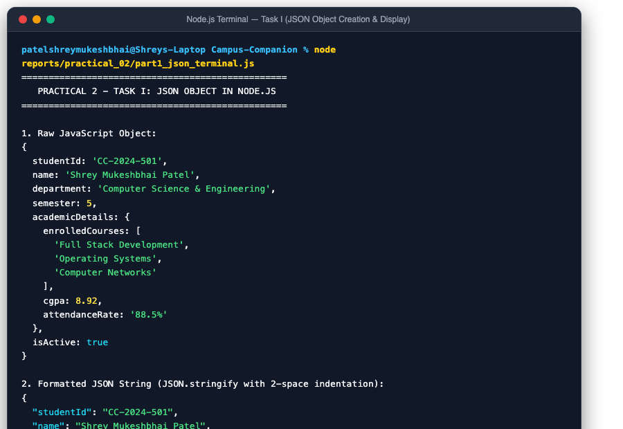
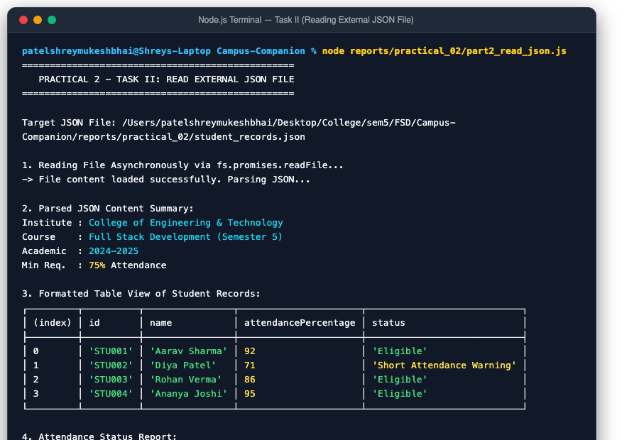
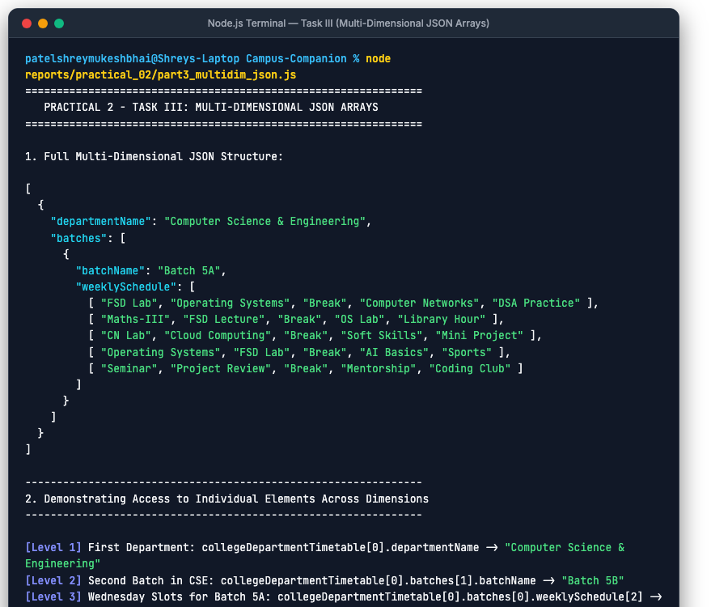

JSON (JavaScript Object Notation): A lightweight, language-independent data-interchange format. Built on key-value pairs (objects) and ordered lists of values (arrays).
Serialization & Deserialization: JSON.stringify() converts JavaScript structures to text for transmission/storage, while JSON.parse() deserializes stringified JSON back into executable JavaScript memory objects.
We declare a nested JavaScript object containing scalar types (strings, numbers, booleans) and nested collections. We then use JSON.stringify(obj, null, 2) with indentation parameters to pretty-print formatted JSON in Node.js, and demonstrate deserialization using JSON.parse().
reports/practical_02/part1_json_terminal.jsconst studentProfile = {
studentId: "CC-2024-501",
name: "Shrey Mukeshbhai Patel",
department: "Computer Science & Engineering",
semester: 5,
academicDetails: {
enrolledCourses: ["Full Stack Development", "Operating Systems", "Computer Networks"],
cgpa: 8.92,
attendanceRate: "88.5%"
},
isActive: true
};
// 1. Raw JavaScript Object
console.log("Raw Object:", studentProfile);
// 2. Formatted JSON String (Serialized)
const jsonStringFormatted = JSON.stringify(studentProfile, null, 2);
console.log("Formatted JSON:\n", jsonStringFormatted);
// 3. Deserializing and Accessing Properties
const parsedObject = JSON.parse(jsonStringFormatted);
console.log(`Student Name : ${parsedObject.name}`);
console.log(`CGPA : ${parsedObject.academicDetails.cgpa}`);
Using Node.js's native asynchronous file system API (fs.promises.readFile), the external dataset student_records.json is ingested as UTF-8 encoded text and safely parsed into memory with JSON.parse(). Data is rendered using console.table() and iterative reporting.
reports/practical_02/student_records.json{
"institute": "College of Engineering & Technology",
"academicYear": "2024-2025",
"course": "Full Stack Development (Semester 5)",
"students": [
{ "id": "STU001", "name": "Aarav Sharma", "attendancePercentage": 92, "status": "Eligible" },
{ "id": "STU002", "name": "Diya Patel", "attendancePercentage": 71, "status": "Short Attendance Warning" },
{ "id": "STU003", "name": "Rohan Verma", "attendancePercentage": 86, "status": "Eligible" },
{ "id": "STU004", "name": "Ananya Joshi", "attendancePercentage": 95, "status": "Eligible" }
],
"gradingPolicy": { "minAttendance": 75, "passMarks": 40 }
}reports/practical_02/part2_read_json.jsconst fs = require('fs');
const path = require('path');
const filePath = path.join(__dirname, 'student_records.json');
async function loadExternalJSON() {
try {
const rawData = await fs.promises.readFile(filePath, 'utf-8');
const parsedData = JSON.parse(rawData);
console.log(`Institute : ${parsedData.institute}`);
console.log(`Course : ${parsedData.course}`);
console.table(parsedData.students);
parsedData.students.forEach((student, index) => {
const isEligible = student.attendancePercentage >= parsedData.gradingPolicy.minAttendance;
const statusIcon = isEligible ? "[OK] " : "[WARN]";
console.log(` ${statusIcon} #${index + 1} ${student.name.padEnd(16)} | Attendance: ${student.attendancePercentage}%`);
});
} catch (err) {
console.error("Error reading JSON file:", err.message);
}
}
loadExternalJSON();
Multi-dimensional JSON arrays store complex hierarchical records. In this task, we model a 4-tier college scheduling matrix: Departments → Batches → Weekdays → Time Slots. We demonstrate precision indexing: collegeDepartmentTimetable[deptIdx].batches[batchIdx].weeklySchedule[dayIdx][slotIdx].
reports/practical_02/part3_multidim_json.jsconst collegeDepartmentTimetable = [
{
departmentName: "Computer Science & Engineering",
batches: [
{
batchName: "Batch 5A",
weeklySchedule: [
["FSD Lab", "Operating Systems", "Break", "Computer Networks", "DSA Practice"], // Monday
["Maths-III", "FSD Lecture", "Break", "OS Lab", "Library Hour"], // Tuesday
["CN Lab", "Cloud Computing", "Break", "Soft Skills", "Mini Project"], // Wednesday
["Operating Systems", "FSD Lab", "Break", "AI Basics", "Sports"], // Thursday
["Seminar", "Project Review", "Break", "Mentorship", "Coding Club"] // Friday
]
}
]
}
];
// Level 1 Access: Department Name
console.log(collegeDepartmentTimetable[0].departmentName);
// Level 2 Access: Batch Name
console.log(collegeDepartmentTimetable[0].batches[0].batchName);
// Level 3 Access: Wednesday Slot Array
console.log(collegeDepartmentTimetable[0].batches[0].weeklySchedule[2]);
// Level 4 Precision Indexing: Thursday Slot 2
console.log(collegeDepartmentTimetable[0].batches[0].weeklySchedule[3][1]); // "FSD Lab"
Our Campus Companion project already incorporates a full-stack To-Do list application that manages tasks as JSON data structures across the frontend Redux store, REST API, and backend MongoDB controller:
frontend/src/pages/TodoPage/TodoPage.jsxfrontend/src/store/todoSlice.js (manages JSON arrays for tasks, filters, and stats)backend/src/controllers/todo.controller.js (CRUD JSON payload handling)frontend/src/store/todoSlice.jsimport { createSlice, createAsyncThunk } from '@reduxjs/toolkit'
import { todoAPI } from '../api/todo.api'
export const fetchTodos = createAsyncThunk(
'todos/fetchTodos',
async ({ filter, sort, search } = {}, { rejectWithValue }) => {
try {
const response = await todoAPI.getTodos({ filter, sort, search })
return response.data.data
} catch (error) {
return rejectWithValue(error.response?.data?.message || 'Failed to fetch tasks')
}
}
)
export const createTodo = createAsyncThunk(
'todos/create',
async (data, { rejectWithValue }) => {
try {
const response = await todoAPI.createTodo(data)
return response.data.data
} catch (error) {
return rejectWithValue(error.response?.data?.message || 'Failed to create task')
}
}
)backend/src/controllers/todo.controller.js// Update / Toggle Task Status
export const updateTodo = async (req, res, next) => {
try {
const { id } = req.params;
const todo = await Todo.findOneAndUpdate(
{ _id: id, student: req.user._id },
{ $set: req.body },
{ new: true, runValidators: true }
);
if (!todo) throw new NotFoundError('Task not found');
res.json({ success: true, message: 'Task updated successfully', data: todo });
} catch (error) {
next(error);
}
};
// Delete Task from Database
export const deleteTodo = async (req, res, next) => {
try {
const { id } = req.params;
const todo = await Todo.findOneAndDelete({ _id: id, student: req.user._id });
if (!todo) throw new NotFoundError('Task not found');
res.json({ success: true, message: 'Task deleted successfully' });
} catch (error) {
next(error);
}
};fs.promises) to read, parse, and analyze external JSON files.